Tema 25: Programación de dibujos con Gloss
Índice
- 1. Introducción
- 2. Instalación de Gloss
- 3. Representación de dibujos
- 4. El TDA de los dibujos
- 5. Ampliaciones del TDA de dibujos
- 6. Capas de dibujos
- 7. Dibujos predefinidos en Graphics.Gloss.Data.Picture
- 8. Dibujos con listas de comprensión
- 9. Gráficas de funciones
- 10. Dibujos programados (diseño descendente)
1. Introducción
- En este tema se estudia una librería de dibujos en Haskell.
- La librería es Graphics.Gloss.
- Nos centraremos en el uso de los tipos de datos algebraicos.
- Aspectos importantes:
- ¿Cómo representar los dibujos en Haskell?
- ¿Cómo mostrar dichos dibujos?
- Sólo consideraremos el primer aspecto.
2. Instalación de Gloss
En una terminal ejecutar
> cabal update > cabal install gloss
3. Representación de dibujos
Representación de puntos:
type Point = (Float, Float)
- Elementos de los dibujos:
- líneas: sucesiones de puntos que representan los extremos,
- polígonos: sucesiones de puntos que representan los vértices.
- textos: cadenas (escritas en el origen (centro de la ventana)).
Representación de caminos:
type Path = [Point]
4. El TDA de los dibujos
4.1. Elementos básicos del TDA de los dibujos
data Picture = Line Path | Polygon Path | Text String
4.2. Ejemplo de líneas
Fichero lineas.hs
import Graphics.Gloss main :: IO () main = display (InWindow "Dibujo" (300,300) (20,20)) white cuadrado cuadrado :: Picture cuadrado = Line [(72,72),(144,72),(144,144),(72,144),(72,72)]
Ejecución
> stack runhaskell lineas.hs
- Resultado:
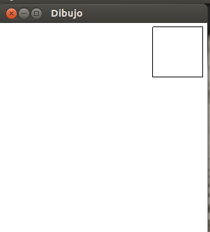 - Comentarios:
(InWindow t (b,a) (x,y))es una ventana de títulot, baseby alturaacon el vértice superior izquierdo en el punto(x,y).(display v c d)dibuja en la ventanav, con color de fondoc, el dibujod.- El dibujo puede desplazarse con el ratón.
4.3. Ejemplo de polígono
Fichero poligono.hs
import Graphics.Gloss main :: IO () main = display (InWindow "Dibujo" (300,300) (20,20)) white cuadrado cuadrado :: Picture cuadrado = Polygon [(72,72),(144,72),(144,144),(72,144),(72,72)]
Ejecución
> stack runhaskell poligono.hs
- Resultado
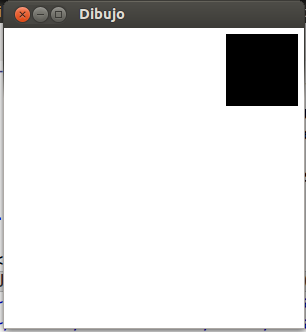
4.4. Ejemplo de texto
Fichero texto.hs
import Graphics.Gloss main :: IO () main = display (InWindow "Dibujo" (800,300) (20,20)) white texto texto :: Picture texto = Text "Figura"
Ejecución
> stack runhaskell texto.hs
- Resultado
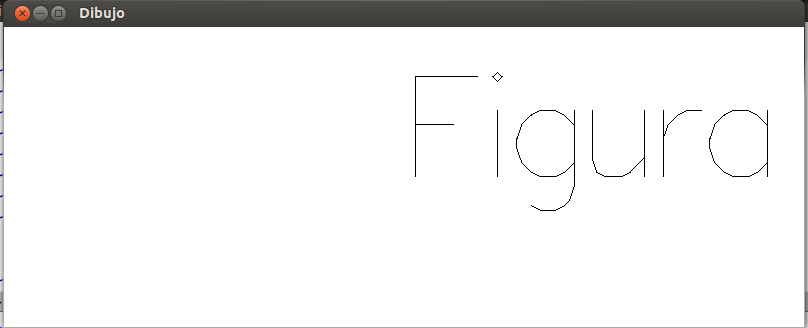
5. Ampliaciones del TDA de dibujos
5.1. Ampliación del TDA para incluir listas de dibujos
Ampliación
data Picture = ... | Pictures [Picture]
Ejemplo dosCuadrados.hs
dibujo :: Picture dibujo = Pictures [cuadrado1, cuadrado2] cuadrado1 :: Picture cuadrado1 = Line [(72,72),(144,72),(144,144),(72,144),(72,72)] cuadrado2 :: Picture cuadrado2 = Line [(0,0),(100,0),(100,100),(0,100),(0,0)]
Ejecución
> stack runhaskell dosCuadrados.hs
- Resultado
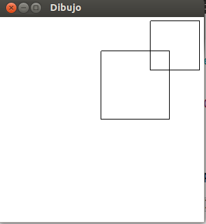
5.2. Ampliación del TDA para incluir transformaciones
Ampliación
data Picture = ... | Translate Float Float Picture | Rotate Float Picture | Scale Float Float Picture
Translatedistancia-x distancia-yRotategrados en sentido horario alrededor del origenScalefactor-x factor-y
Se pueden componer transformaciones. Por ejemplo,
Translate 0 200 (Rotate 20 (Scale 0.5 0.3 algo))
Se pueden eliminar paréntesis usando el operador
$. Por ejemplo,Translate 0 200 $ Rotate 20 $ Scale 0.5 0.3 algo
Ejemplo de transformaciones: transformaciones.hs
import Graphics.Gloss main :: IO () main = display (InWindow "Dibujo" (300,300) (20,20)) white dibujo dibujo :: Picture dibujo = Pictures [cuadrado, titulo] cuadrado :: Picture cuadrado = Line [(72,72),(144,72),(144,144),(72,144),(72,72)] titulo :: Picture titulo = Rotate (-10) $ Translate (-70) 0 $ Scale 0.2 0.2 $ Text "Un cuadrado"
genera
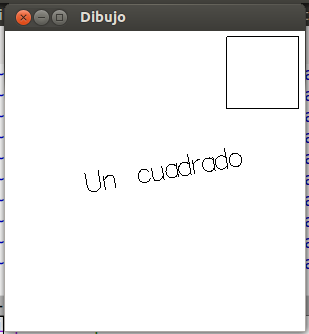
5.3. Ampliación del TDA para incluir colores
Ampliación
data Picture = ... | Color Color Picture
Colores otro tipo de dato algebraicodata Color = RGBA Float Float Float Float
- Los cuatros parámetros son valores entre 0 y 1, para los canales rojo, verde, azul y alfa, respectivamente.
- Algunos colores están predefinidos en Graphics.Gloss.Data.Color: red, green, blue, yellow, cyan, magenta, rose, violet, azure, aquamarine, chartreuse, orange, greyN, black, white.
Ejemplo dosCuadradosColoreados.hs:
import Graphics.Gloss main :: IO () main = display (InWindow "Dibujo" (300,300) (20,20)) white dibujo dibujo :: Picture dibujo = Pictures [cuadrado2, cuadrado1] cuadrado1 :: Picture cuadrado1 = Color red $ Polygon [(72,72),(144,72),(144,144),(72,144),(72,72)]
genera
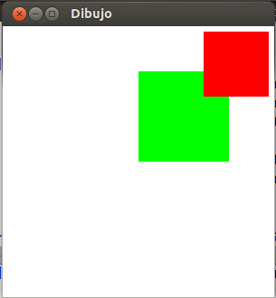
6. Capas de dibujos
- El orden en una lista de dibujos es importante.
- El primer elemento de la lista es el primero que se dibuja, a continuación el segundo y así sucesivamente.
La lista de los dibujos forman las capas del dibujo combinado:
Pictures [capa1, capa2, capa3, ...]
Ejemplo: En dosCuadradosColoreados.hs, las capas eran
Pictures [cuadrado2, cuadrado1]
por eso se pintaba primero el verde y encima el rojo. Si se cambia el orden de las capas por
Pictures [cuadrado1, cuadrado2]
el dibujo que se obtiene es
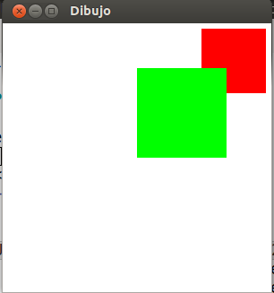
7. Dibujos predefinidos en Graphics.Gloss.Data.Picture
7.1. Círculos
(circle r)es un círculo de radio r. Por ejemplocircle 100genera
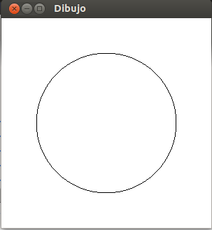(circleSolid r)es un círculo sólido de radio r. Por ejemplocircleSolid 100genera
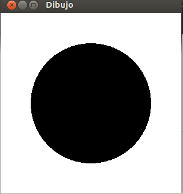(thickCircle r g)es la corona circular de radio r y grosor g. Por ejemplothickCircle 100 30genera
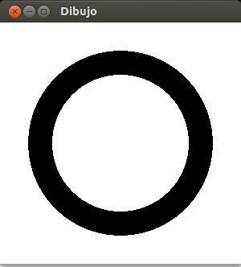
7.2. Arcos circulares
(arc x y r)es el arco de radio r entre los ángulos (en grados) x e y. Por ejemploarc 0 90 100genera
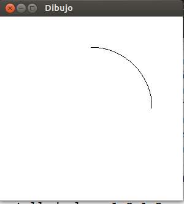(arcSolid x y r)es el arco sólido de radio r entre los ángulos (en grados) x e y. Por ejemplo,arcSolid 0 90 100genera
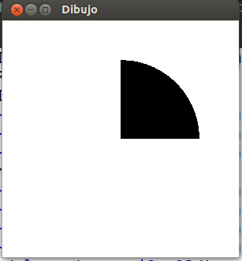(thickArc x y r g)es el arco de radio r entre los ángulos (en grados) x e y, de grosor g. Por ejemplo,thickArc 0 90 100 50genera
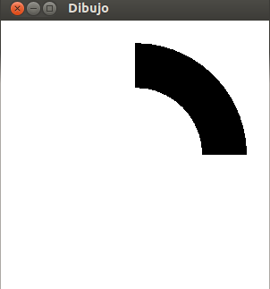(sectorWire x y r)es el sector circular de radio r entre los ángulos (en grados) x e y; las líneas van del origen a los extremos del arco. Por ejemplosectorWire 0 90 100genera
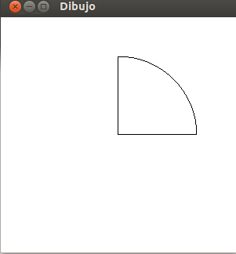
7.3. Bucles
(lineLoop ps)es la línea que une los puntos de ps, cada uno con el siguiente y el último con el primero. Por ejemplo,lineLoop [(-123,-99),(15,17),(107,-73)]
genera
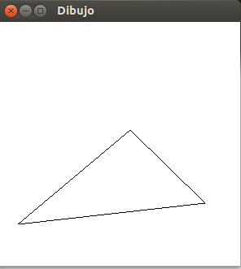
7.4. Rectángulos
(rectanglePath x y)es la lista de los vértices del rectángulo de base x y altura y con centro en el origen. Por ejemplo,λ> rectanglePath 200 100 [(-100.0,-50.0),(-100.0,50.0),(100.0,50.0),(100.0,-50.0)]
(rectangleWire x y)es el rectángulo de base x y altura y con centro en el origen. Por ejemplo,rectangleWire 200 100genera
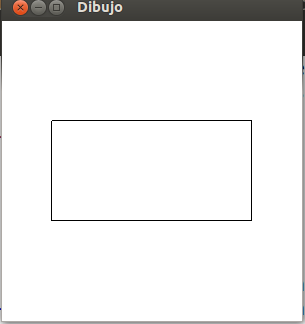(rectangleSolid x y)es el rectángulo sólido de base x y altura y con centro en el origen. Por ejemplo,rectangleSolid 200 100genera
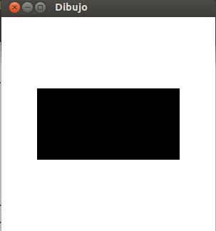(rectangleUpperPath x y)es la lista de los vértices del rectángulo de base x y altura y con centro en el origen, en el semiplano y > 0. Por ejemplo,λ> rectangleUpperPath 200 100 [(-100.0,0.0),(-100.0,100.0),(100.0,100.0),(100.0,0.0)]
(rectangleUpperWire x y)es el rectángulo de base x y altura y con centro en el origen en el semiplano y > 0. Por ejemplo,rectangleUpperWire 200 100genera
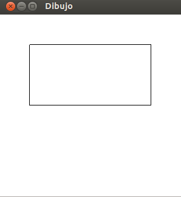(rectangleUpperSolid x y)es el rectángulo sólido de base x y altura y con centro en el origen en el semiplano y > 0. Por ejemplo,rectangleUpperSolid 200 100genera
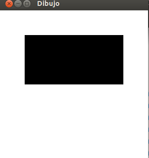
8. Dibujos con listas de comprensión
8.1. Círculos concéntricos
- Dibujo:
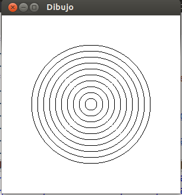 Programa circulos_concentricos.hs
import Graphics.Gloss main :: IO () main = display (InWindow "Dibujo" (300,300) (20,20)) white dibujo dibujo :: Picture dibujo = pictures [ circle x | x <- [10,20..100] ]
8.2. Círculos trasladados
- Dibujo
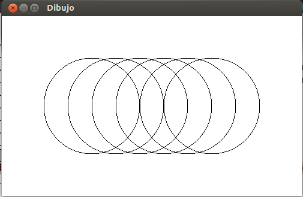 Programa circulos_trasladados.hs
import Graphics.Gloss main :: IO () main = display (InWindow "Dibujo" (500,300) (20,20)) white dibujo dibujo :: Picture dibujo = pictures [translate x 0 (circle 80) | x <- [-100,-60..100]]
8.3. Circulos trasladados y ampliados
- Dibujo
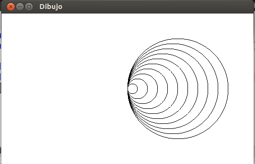 Programa circulos_trasladados_ampliados.hs
import Graphics.Gloss main :: IO () main = display (InWindow "Dibujo" (500,300) (20,20)) white dibujo dibujo :: Picture dibujo = pictures [translate x 0 (circle x) | x <- [10,20..100]]
8.4. Rectángulos girados
- Dibujo
Programa rectangulos_girados.hs
import Graphics.Gloss main :: IO () main = display (InWindow "Dibujo" (500,300) (20,20)) white dibujo dibujo :: Picture dibujo = pictures [rotate x (rectangleWire 200 200) | x <- [0,10..90]]
8.5. Rectángulos girados y trasladados
- Dibujo
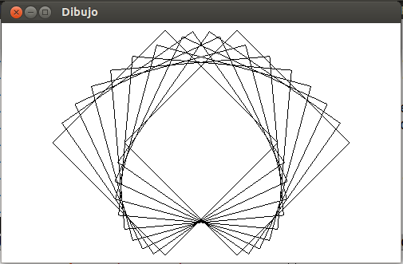 Programa rectangulos_girados_y_trasladados.hs
import Graphics.Gloss main :: IO () main = display (InWindow "Dibujo" (500,300) (20,20)) white dibujo dibujo :: Picture dibujo = pictures [translate x 0 (rotate x (rectangleWire 200 200)) | x <- [-45,-35..45]]
8.6. Círculos en cuadrado
- Dibujo
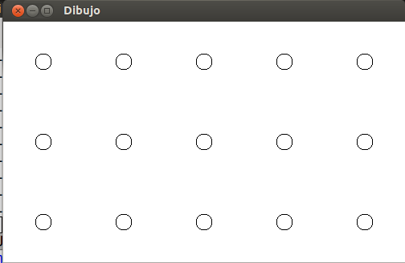 Programa circulos_en_cuadrado.hs
import Graphics.Gloss main :: IO () main = display (InWindow "Dibujo" (500,300) (20,20)) white dibujo dibujo :: Picture dibujo = pictures [translate x y (circle 10) | x <- [-200,-100..200], y <- [-200,-100..200]]
8.7. Círculos en estrella
- Dibujo
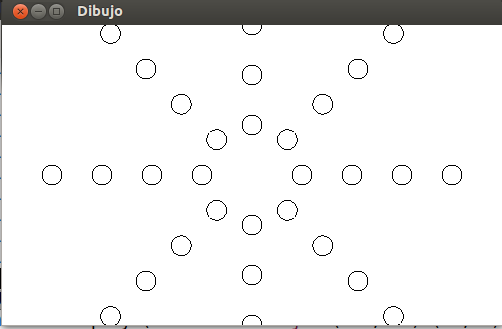 Programa circulos_en_estrella.hs
import Graphics.Gloss main :: IO () main = display (InWindow "Dibujo" (500,300) (20,20)) white dibujo dibujo :: Picture dibujo = pictures [rotate angulo (translate x 0 (circle 10)) | x <- [50,100..200], angulo <- [ 0, 45..360]]
8.8. Círculos expandiéndose
- Dibujo
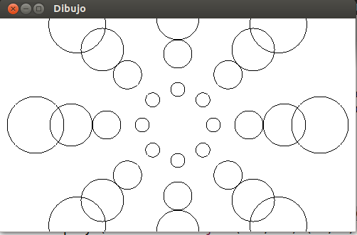 Programa circulos_expandiendose.hs
import Graphics.Gloss main :: IO () main = display (InWindow "Dibujo" (500,300) (20,20)) white dibujo dibujo :: Picture dibujo = pictures [rotate angulo (translate (5*x) 0 (circle x)) | x <- [10,20.. 40], angulo <- [ 0,45..360]]
9. Gráficas de funciones
El programa para dibujar la siguiente parábola (y = x²)
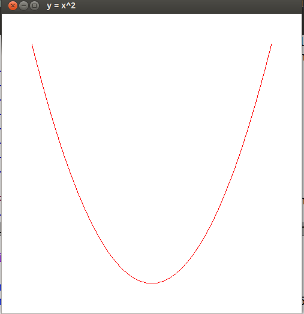
es parabola.hsimport Graphics.Gloss main :: IO () main = display (InWindow "y = x^2" (500,500) (20,20)) white dibujo dibujo :: Picture dibujo = Color red (Translate 0 (-200) parabola) parabola :: Picture parabola = Line (map puntosParabola [-200, -190 .. 200]) where puntosParabola x = (x, x^2/100)
10. Dibujos programados (diseño descendente)
- Los siguiente dibujos se diseñan de manera descendente: se inicia con el marco y se le va añadiendo elementos.
10.1. Elefante
- Dibujo
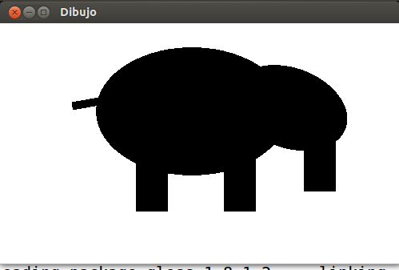 Programa elefante.hs
import Graphics.Gloss main :: IO () main = display (InWindow "Dibujo" (500,300) (20,20)) white dibujo dibujo :: Picture dibujo = elefante elefante = pictures [rotate 20 (scale 3 2 (translate 30 40 (circleSolid 25))), -- cabeza translate 150 (-20) (rectangleSolid 40 80), -- trompa translate (-10) 40 (scale 1.5 1 (circleSolid 80)), -- cuerpo translate 50 (-50)(rectangleSolid 40 70), -- pata delantera translate (-60) (-50) (rectangleSolid 40 70), -- pata trasera translate (-140) 50 (rotate (-100) (rectangleSolid 10 40)) -- cola ]
10.2. Plato de comida
- Dibujo
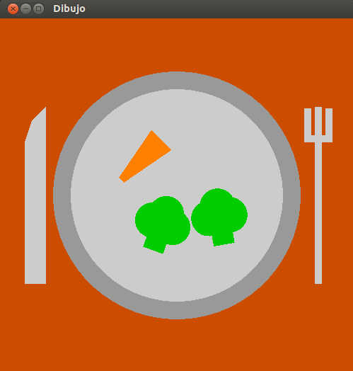 Programa plato.hs
import Graphics.Gloss main :: IO () main = display (InWindow "Dibujo" (500,500) (20,20)) white dibujo dibujo :: Picture dibujo = platoConComida platoConComida :: Picture platoConComida = pictures [ mesa, plato, comida, translate ( 200) 0 tenedor, translate (-200) 0 cuchillo ] mesa :: Picture mesa = color marron (rectangleSolid 500 500) plato :: Picture plato = pictures [ color gris (circleSolid 175), color grisClaro (circleSolid 150) ] comida :: Picture comida = pictures [ translate (-50) ( 50) (rotate 45 zanahoria), translate (-20) (-40) (rotate 20 brocoli), translate ( 60) (-30) (rotate (-10) brocoli) ] zanahoria :: Picture zanahoria = color orange (polygon [(-5,-40),(-20,40),(20,40),(5,-40) ]) brocoli :: Picture brocoli = color (dark green) (pictures [ translate ( 0) (-15) (rectangleSolid 30 50), -- base translate (-15) ( 0) (circleSolid 25), -- flor translate ( 15) ( 0) (circleSolid 25), -- flor translate ( 0) ( 15) (circleSolid 25) -- flor ]) tenedor :: Picture tenedor = color grisClaro (pictures [rectangleSolid 10 250, -- mango translate ( 0) ( 80) (rectangleSolid 40 10), -- base translate (-15) (100) (rectangleSolid 10 45), -- diente izquierdo translate ( 15) (100) (rectangleSolid 10 45) -- diente derecho ]) cuchillo :: Picture cuchillo = color grisClaro (pictures [translate 0 (-25) (rectangleSolid 30 200), -- mango polygon [ (-15, 75), ( -5, 105), ( 15, 125), ( 15, 75) ] -- hoja ]) marron, grisClaro, gris :: Color marron = dark orange grisClaro = dark white gris = dark grisClaro